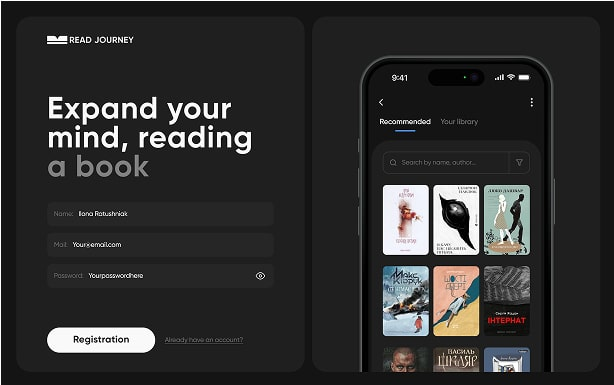

<section class="project">
    <div class="container-title-project">
        <h3 class="title-project">Projects</h3>
    </div>

<div class="wrap-projects">
    <div class="project-wrap">
        <div class="wrap-again">
            <ul class="list-links">
                <li class="wrap-first">
                    <a href="">#react</a>
                </li>
                <li class="wrap-second">
                    <a href="">#js</a>
                </li>
                <li class="wrap-first">
                    <a href="">#node js</a>
                </li>
                <li class="wrap-second">
                    <a href="">#git</a>
                </li>
            </ul>
            <h2 class="title-projects">Programming Across <br>Borders: Ideas, <br>Technologies, Innovations</h2>
            <a href="https://github.com/JuliaCicer13/project">
                <button class="order-button" type="button">See project</button>
            </a>
        </div>
    </div>
    <div class="picture">
   
    </div>
</div>
<div class="buttons-reviews">
    <button class="button-project" type="button">
        <svg width="24" height="24" viewBox="0 0 24 24" fill="none" xmlns="http://www.w3.org/2000/svg">
            <path d="M15 19l-7-7 7-7" stroke="white" stroke-width="2" stroke-linecap="round" stroke-linejoin="round"/>
        </svg>
    </button>
    <button class="button-project-second" type="button">
        <svg width="24" height="24" viewBox="0 0 24 24" fill="none" xmlns="http://www.w3.org/2000/svg">
            <path d="M9 5l7 7-7 7" stroke="white" stroke-width="2" stroke-linecap="round" stroke-linejoin="round"/>
        </svg>
    </button>
</div>
</section>